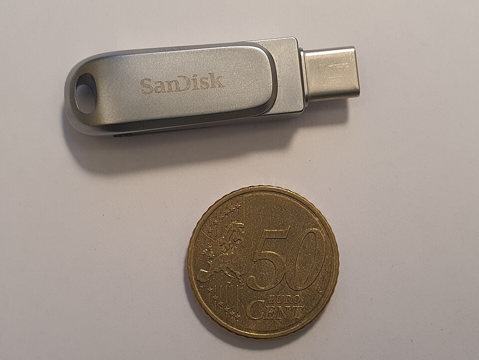

Como criar um pendrive de boot direto com a ISO
Quando usar
É possível criar um pendrive de boot sem o Ventoy ou o Rufus, gravando a imagem ISO com ferramentas que
já vêm no sistema. No Linux isso é feito com o comando dd ou com o programa Discos; no
Windows, para o Windows 10 ou 11, basta copiar os arquivos da ISO. Essas formas são úteis quando não há
internet para baixar outros programas, mas exigem mais cuidado.

No Linux, pelo terminal
Conecte o pendrive e use lsblk para descobrir o nome dele, que aparece como sdb, sdc ou
parecido, conferindo pelo tamanho. Esse passo é muito importante: se o disco errado for escolhido, o
comando apaga o HD do computador.
Grave a ISO com sudo dd if=arquivo.iso of=/dev/sdX bs=4M status=progress oflag=sync, trocando
arquivo.iso pelo caminho da imagem e sdX pelo nome do pendrive. Use o nome do disco inteiro (por exemplo,
/dev/sdb), não o de uma partição (/dev/sdb1). Esse método funciona bem com ISOs de Linux; com ISOs do
Windows, o dd normalmente não funciona.
No Linux, pelo programa Discos
No Ubuntu, abra o programa Discos, selecione o pendrive na lista da esquerda, clique no menu de três pontos e em Restaurar imagem de disco, escolha o arquivo ISO e clique em Iniciar restauração.
No Windows, copiando os arquivos
Para o Windows 10 e 11, formate o pendrive em FAT32, dê um duplo clique no arquivo ISO, que é montado (aberto como se fosse um DVD), e copie todo o conteúdo para o pendrive.
Esse método só funciona em computadores com UEFI, não em computadores antigos com BIOS Legacy. Além disso,
o FAT32 não aceita arquivos maiores que 4 GB, e em algumas ISOs o arquivo
sources/install.wim passa desse tamanho. Nesses casos, use o Rufus
ou o Ventoy.